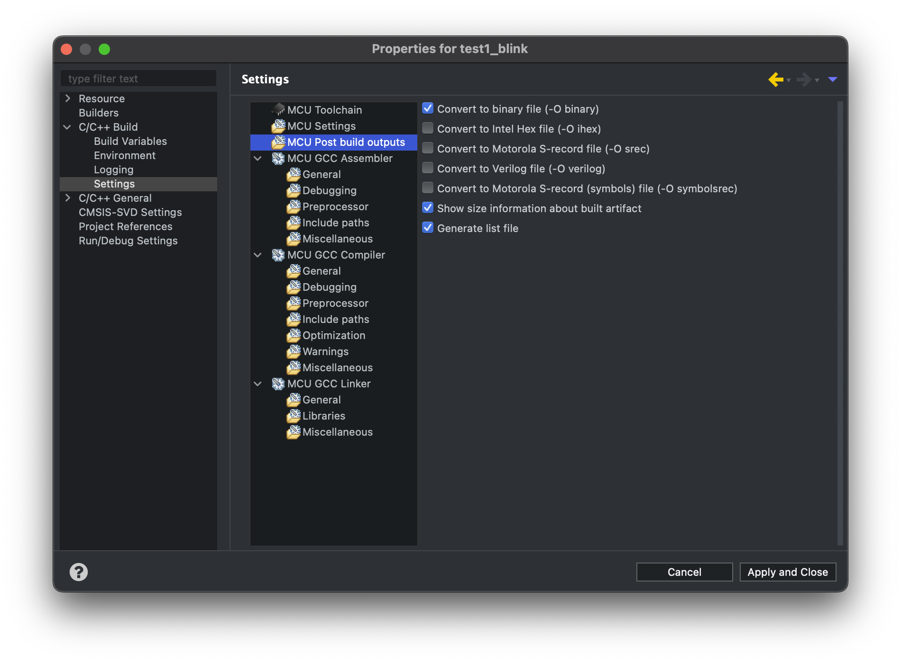

实验3指南¶
4-17 更新内容
-
增加 STM32F103C8T6 存储器布局 的说明
-
增加 官方 IAP 使用提示
-
增加 生成 bin 文件的方法
请跟随实验指南完成实验，完成文档中所有的TASK。BONUS部分的内容完成可作为加分，但报告的总分不应超过100分。请下载此指南作为实验报告模版，将填充完成的实验报告导出为PDF格式，并命名为“学号_姓名_lab3.pdf”，上传至学在浙大平台。下载请点击 这里 。
此实验要求实现一个简易的 boot loader ，能够通过串口执行四条最简单的指令：peek、poke、load和run。
1 硬件连线¶
本实验中不需要用到开关，只需将103板连接下载器（ST-Link）和串口即可。
TASK1 请拍摄实际的硬件连接图（5分）
2 指令解析¶
本实验中，boot loader 通过串口接收指令，指令的格式以及简介如下表所示：
| 指令 | 格式 | 说明 |
|---|---|---|
| peek | peek <addr> |
读取 addr 位置的数据 |
| poke | poke <addr> <data> |
修改 addr 位置的数据为 data |
| load | load <addr> |
从PC接收一段二进制数据，保存在 addr 开始的地址中 |
| run | run <addr> |
运行 addr 开始的程序 |
请你编写程序，能够解析串口接收到的指令，并将指令分离出命令字和参数，将分离的结果返回，在串口输出。要求仅返回上述四种指令，若输入为其他指令，则返回非法提示信息。
示例
串口接收到的指令为 peek 00008000 ，则返回 INS: peek 和 PARA: 00008000 。
串口接收到的指令为 poke 00008000 00000000 ，则返回 INS: poke ， PARA1: 00008000 和 PARA2: 00000000 。
TASK2 请给出实现指令解析的代码（10分）
TASK3 请自己设计若干测试，烧录上板后运行测试，并给出串口的输出截图（5分）
3 Boot Loader 实现¶
在实现了指令解析之后，我们可以具体实现 Bootloader 中 peek、poke、load 和 run 指令。
在实现 Bootloader 之前，我们需要了解 103 板的存储器布局，我们实验所用的开发板型号为 STM32F103C8T6，其 Flash memory 为 64KB ，SRAM 为 20KB 。其中，Flash memory 的起始地址为 0x08000000，SRAM 的起始地址为 0x20000000。如下图所示：
需要注意，此图中 Flash memory 为 128KB（因为图片为 STM32F103xx 通用的存储器布局），我们所用的开发板 Flash memory 为 64KB。如需要更加详细了解，可以参考 STM32F103xx 数据手册 。
需要重点关注 Flash memory 以及 SRAM 所在的地址区间，以免进行错误访问。 在接下来实现 load 指令时，所产生的超时错误，很有可能是由于尝试擦除或者写入 Flash memory 以外的地址所导致的。
3.1 peek 指令¶
指令 peek <addr> 即为以一个字为单位，读取内存中 addr 位置的数据（addr是4字节对齐，十六进制的形式，长度为8位十六进制，没有引导字符，例如 00008000），并以十六进制的形式输出结果，输出结果为自然序（高位在前）。
此指令的实现较为容易，注意使用指针操作即可。可选的一种方法为使用 sprintf 函数，将数据输出到缓冲区的字符串中，再通过串口输出此字符串。
为了方便结果验证，请在完成此部分时，自行在代码中添加若干变量并赋值，在串口开始接收指令之前先将对应的变量地址和值输出到串口，以便验证此部分的代码是否正确。
TASK4 请给出实现 peek 指令的关键代码。（10分）
TASK5 在烧录后做若干测试，并证明结果正确性，请给出相应的截图。（5分）
3.2 poke 指令¶
指令 poke <addr> <data> 以一个字为单位修改内存中 addr 位置的数据为 data（addr 是 4 字节对齐,十六进制的形式，长度为8位十六进制, data 也是十六进制的形式，长度为8位十六进制，为自然序高位在前）
与 peek 指令类似，也只需要通过一些简单的指针操作便可实现。需要注意的是，在测试此指令时，也需要自行添加若干变量并赋值。这样可以后续修改这些变量所在地址的值，方便进行验证。
TASK6 请给出实现 poke 指令的关键代码。（10分）
TASK7 在烧录后做若干测试，并配合 peek 指令证明结果正确性，请给出相应的截图。（5分）
TASK8 尝试随意寻找地址，并修改其中的值，可能会发生什么现象？为什么？（5分）
3.3 load 指令¶
3.3.1 XModem 协议¶
XModem 协议是一种串口通信中广泛用到的异步文件传输协议。它以以128字节块的形式传输数据，每个块以SOH（0x01）开始，以CRC校验结束。每个块的格式如下：
| 命令字符 | 命令码 | 备注 |
|---|---|---|
| SOH | 0x01 | 数据头 |
| STX | 0x02 | |
| EOT | 0x04 | 发送结束 |
| ACK | 0x06 | 接收成功 |
| NAK | 0x15 | 接收失败 |
| CAN | 0x18 | 取消传输 |
XModem 包的格式如下：
---------------------------------------------------------------------------
| Byte1 | Byte2 | Byte3 |Byte4~Byte131| Byte132 |
|-------------------------------------------------------------------------|
|Start Of Header|Packet Number|~(Packet Number)| Packet Data | Check Sum |
---------------------------------------------------------------------------
传输流程如下图所示：
------------------------------------------------------------------------------
| SENDER | | RECIEVER |
| | <--- | NAK |
| | | Time out after 3 second |
| | <--- | NAK |
| SOH|0x01|0xFE|Data[0~127]|CheckSum| | ---> | |
| | <--- | ACK |
| SOH|0x02|0xFD|Data[0~127]|CheckSum| | ---> | |
| | <--- | NAK |
| SOH|0x02|0xFD|Data[0~127]|CheckSum| | ---> | |
| | <--- | ACK |
| SOH|0x03|0xFC|Data[0~127]|CheckSum| | ---> | |
| | <--- | ACK |
| . | | . |
| . | | . |
| . | | . |
| | <--- | ACK |
| EOT | ---> | |
| | <--- | ACK |
------------------------------------------------------------------------------
可以参考如上流程，实现 XModem 协议，以便在串口上实现文件传输。此处允许使用开源的 XModem 协议实现，但需要在报告中说明使用的开源代码的出处。
参考资料
同时，也可以参考官方给出的 IAP 。此 IAP 使用 YModem 协议，实现将串口文件从上位机传输到 STM32 的 Flash 中。
IAP 提示
如果你想要使用以上 ST 官方提供的 IAP 进行移植，需要注意以下几点：
-
需要在 AN4657-STM32Cube_IAP_using_UART/Projects/STM3210C_EVAL/IAP_Main 中寻找
ymodem.c和ymodem.h，放在Cube IDE工程的Drivers目录下，鼠标右键点击IDE右侧栏中含有ymodem.h等头文件的目录，选择“Add/Remove Include Path”，将其加入编译时的-I选项中。 -
需要按需修改接收到的文件所存储的位置（更改
APPLICATION_ADDRESS）。 -
需要更改擦除 Flash 的范围（更改
USER_FLASH_END_ADDRESS），以免擦除到其余地址导致错误。 -
此 IAP 中使用的
Ymodem_Receive使用的是轮询模型，在调用此函数时，若之前开启了串口中断，需要将其关闭，否则会导致串口占用，无法进行文件传输。
3.3.2 指令实现¶
指令 load <addr> 从串口接收一段二进制数据，保存在 addr 开始的地址中。需要使用 XModem、YModem 或 ZModem 协议进行数据传输。
注意，如果需要将数据保存在 FLASH 中，需要先擦除对应的扇区，然后再写入数据。因为在对 FLASH 进行编程时，只能将1变为0。擦除操作即为将Flash的某个扇区全部写入1。擦除完毕后，对 FLASH 进行编程，即可实现改变 FLASH 中的数据。
当然，本实验中没有要求一定要将数据保存在 FLASH 中，也可以将数据保存在 RAM 中，这样操作会更加简单，但数据会在断电后丢失。
如果你需要使用串口调试工具进行文件传输（即用软件帮助你做好相关协议的打包工作），在 MacOS 或者 Linux 系统下，可以继续使用 Picocom，但在 Windows 系统下，PuTTy 和 CoolTerm 对 XModem/YModem/ZModem 协议的支持不太好，可以尝试使用以下软件：
TASK9 请给出实现 load 指令的关键代码。要求对协议实现或者借用开源代码的部分做出适当的解释。（15分）
TASK10 在烧录后做若干测试，并配合 peek 指令证明结果正确性，请给出相应的截图。烧录的二进制文件可以自己使用 ImHex 或其他编辑器创建。（5分）
当然如果你对自己足够有信心，也可以直接将编译好的二进制文件烧录在恰当的地址上，并在此处使用 run 指令进行验证。
3.4 run 指令¶
run <addr> 指令为运行 RAM（或FLASH）地址 addr 开始的程序。
提示
本实验中，可以直接使用 __set_MSP(addr) 函数，将 addr 的值作为栈顶地址，然后跳转到 addr 开始的地址执行程序。
TASK11 请给出实现 run 指令的关键代码。要求对代码做出较为详细的解释。（10分）
实现 run 指令后，可以使用 load 指令将编译好的其他二进制文件烧录到 RAM 中，然后使用 run 指令运行。
STM32CubeIDE 编译默认产生的二进制文件为 *.elf 格式，而在使用 load 指令烧录到 RAM 中时，需要使用 *.bin 格式的文件。可以在 "Project -> Properties -> C/C++ Build -> Settings -> MCU Post build outputs" 中勾选 "Convert to binary file (-O binary)"，之后便可在对应工程的 Debug 文件夹中找到对应的 *.bin 文件。如下图所示：

需要注意的是，在编译二进制文件时，默认的入口地址为 0x08000000，即 Flash 的起始地址。由于存在了 bootloader，我们想要同时烧录其他程序在103板上时，需要对 Flash 的起始地址进行偏移，否则会导致覆盖，或者导致错误的中断偏移量，从而导致程序无法正常运行。具体的偏移量可以在 STM32F103C8TX_FLASH.ld 文件中找到Memories definition这一项，并进行修改。同时需要在system_stm32f1xx.c中修改 VECT_TAB_OFFSET 的值，以保证中断偏移量的正确。
TASK12 请给出你在 STM32F103C8TX_FLASH.ld 中配置的 Memories definition 以及 system_stm32f1xx.c 中设置的 VECT_TAB_OFFSET. 注意，不需要修改 bootloader 程序的这些参数，只需要修改你想放置在 bootloader 后的其他程序的这些参数。（5分）
TASK13 请使用 load 指令将你编译好的二进制文件（选择实验1中的闪烁LED灯即可）烧录至103板，并使用 run 指令运行。给出使用 run 指令后成功跳转至指定程序运行的截图。（10分）
3.5 print 指令（Bonus）¶
print <addr> 指令以字符形式输出从addr开始的字节，直到0x00为止，addr不需要是4字节对齐的。
BONUS1 请给出实现 print 指令的关键代码。要求对代码做出较为详细的解释。（5分Bonus）
BONUS2 请给出使用 print 指令输出字符串的截图。（5分Bonus）
4 讨论和心得¶
请认真填写本模块，若不填写或胡乱填写将酌情扣分，写明白真实情况即可。
请在此处填写实验过程中遇到的问题及相应的解决方式。
由于本实验为新实验，可能存在不足之处，欢迎同学们对本实验提出建议。
个人水平有限，如您发现文档中的疏漏欢迎 Issue！